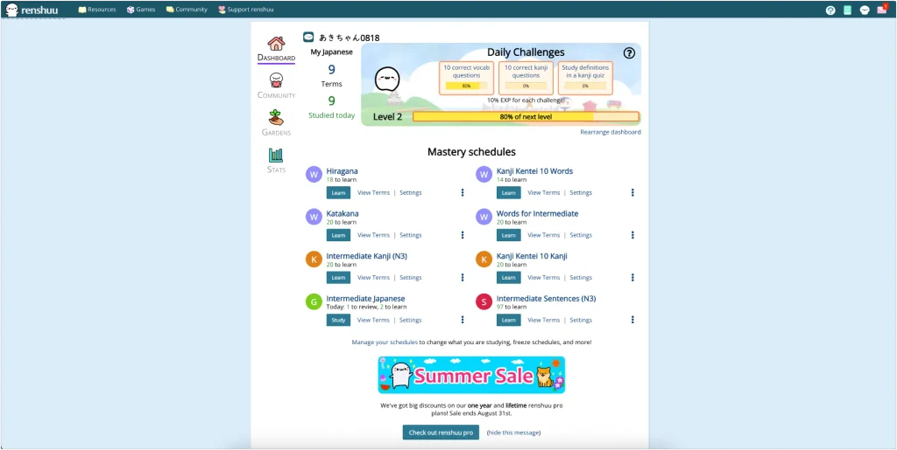
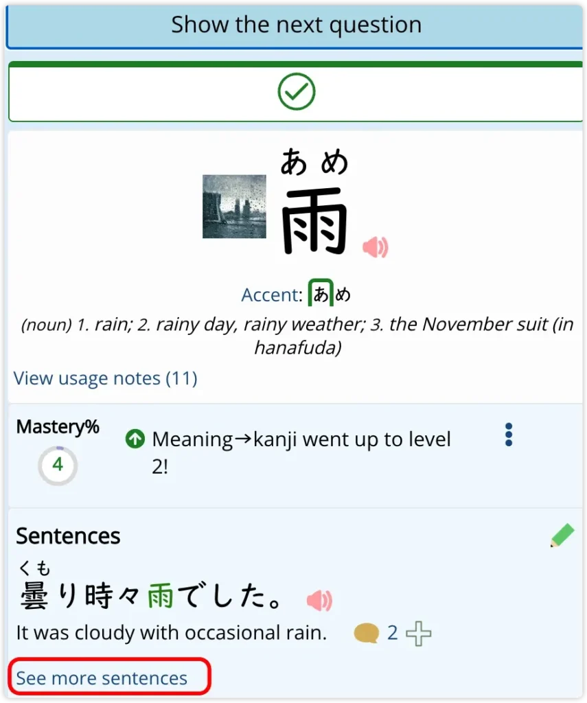
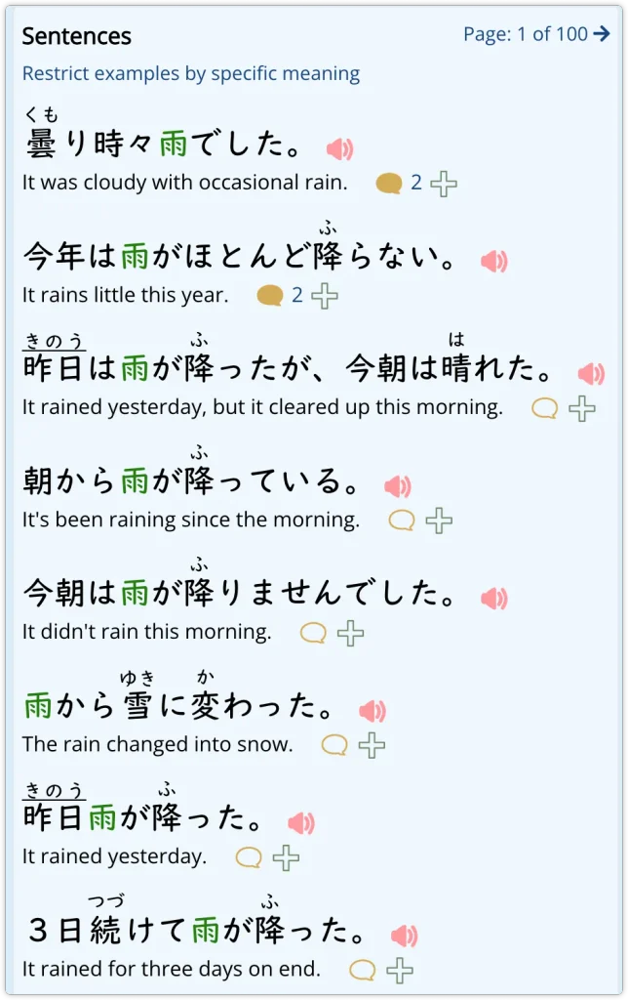
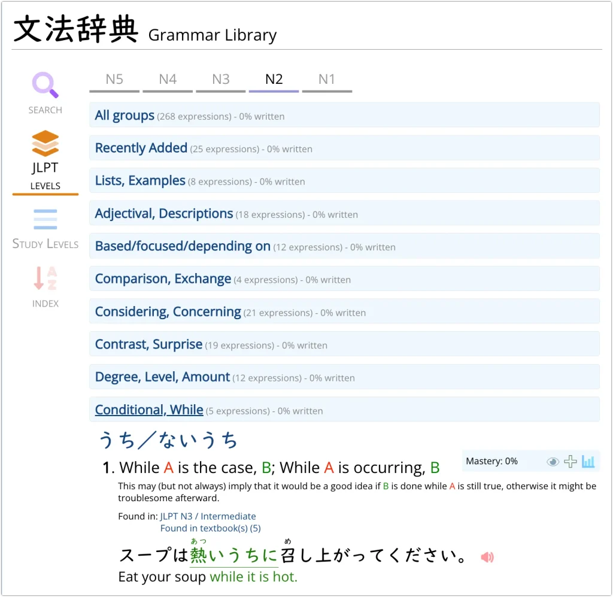
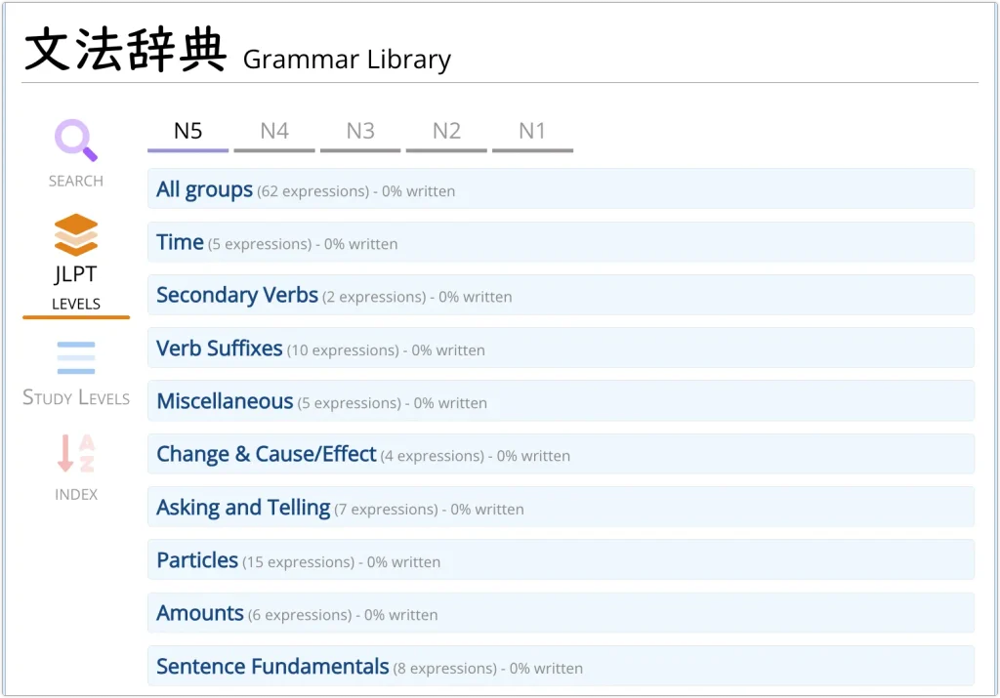
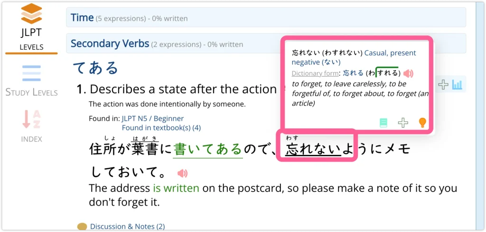
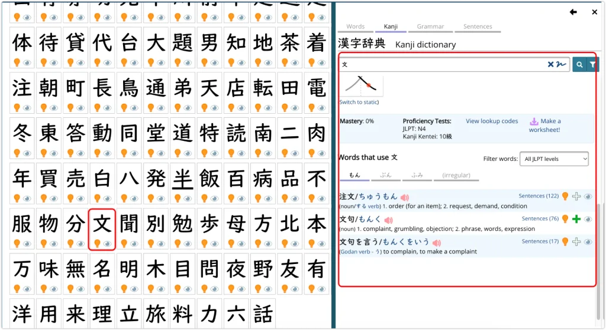
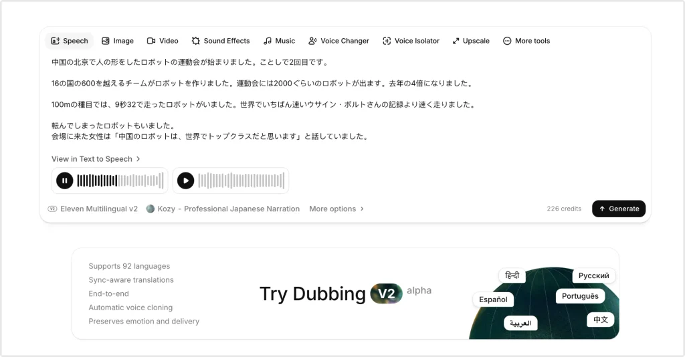

Affiliate disclosure: This post contains affiliate links to some tools mentioned (such as LingQ and ElevenLabs). I may earn a commission at no extra cost to you. Renshuu did not sponsor this review and I was not compensated by them in any way. All opinions are my own.
I started this Renshuu review expecting another Japanese SRS app with vocabulary, kanji, and grammar.
Then I opened the Grammar Library.
Then the kanji dictionary.
Then the Text Analyzer.
Then I realized I could tap words inside example sentences, listen to natural-sounding audio, browse community usage notes, study by JLPT level, and analyze my own Japanese text.
Renshuu feels less like one Japanese course and more like a Japanese learning toolbox.
And a surprising amount of it is free.
Quick Summary
| My experience | |
|---|---|
| Best for | Beginner to intermediate learners who like controlling what they study |
| Levels | Beginner through advanced / JLPT N5–N1 |
| Main areas | Vocabulary, grammar, kanji, sentences, kana, JLPT study |
| Audio | Lots of natural-sounding example audio |
| Grammar | One of Renshuu’s strongest areas |
| Kanji | Detailed and highly interconnected |
| JLPT | Very useful for structured review |
| Free version | Surprisingly generous |
| Biggest downside | So many features that it can feel overwhelming |
| My verdict | One of the most useful free Japanese study tools I have tried |
What Is Renshuu?

Renshuu is a Japanese learning platform that combines vocabulary, kanji, grammar, sentences, kana study, JLPT content, review schedules, dictionaries, community notes, and other study tools in one place.
What makes it different from a simple flashcard app is how connected everything feels.
A kanji can lead to vocabulary.
A vocabulary item can lead to example sentences and audio.
A sentence can contain a word you can tap to see its reading, conjugation, dictionary form, and meaning.
A grammar point can lead to more examples, usage notes, and related structures.
That connected structure is the main reason I kept exploring.
Renshuu Vocabulary: Small Reviews, Lots of Examples
Vocabulary lessons are broken into small groups.
In the schedule I tested, I learned around six new items, reviewed them, and then moved on to the next group.
I liked that pacing.
It felt much less tiring than opening a long flashcard queue and seeing dozens of unfamiliar words at once.
More importantly, Renshuu rarely leaves a word isolated.

You do not just see:
雨 = rain
A word can lead to pronunciation, meanings, example sentences, and additional usage.
When I opened 雨, I could expand a large collection of examples such as:

It was cloudy with occasional rain. 今年は雨がほとんど降らない。
It rains very little this year. 朝から雨が降っている。
It has been raining since the morning. 雨から雪に変わった。
The rain changed into snow. 3日続けて雨が降った。
It rained for three days in a row.
The target word is highlighted clearly, furigana is easy to see, and many examples include audio.
That makes it easier to learn 雨が降る as a real combination instead of memorizing separate dictionary entries.
Renshuu gives you plenty of examples and review options, but a repeatable routine still matters. My guide on how to learn Japanese vocabulary covers practical ways to remember words instead of repeatedly relearning them.
The audio was one of my biggest surprises
A lot of the example audio sounds remarkably natural.
I also noticed that recordings often sounded like different speakers rather than one identical synthetic voice repeating every sentence.
That variety made listening much more interesting.
I would not claim that every recording on Renshuu is human-recorded without knowing the source of every audio file, but the overall experience sounds much more natural than I expected from a free Japanese study tool.
Renshuu lists over 45,000 native-speaker recordings across its vocabulary and sentence database. For a free platform, that is an impressive number.
Renshuu Grammar Library: What Makes It Stand Out


The Grammar Library is probably my favorite part of Renshuu.
You can browse grammar by JLPT level and by function.
For example, grammar can be grouped into areas such as:
Time
Secondary Verbs
Verb Suffixes
Change & Cause/Effect
Sentence Links
Commands / Requests
I find this much more useful than looking at one giant N3 grammar list.
It lets me compare expressions that perform similar functions.
A grammar entry can include:
- the Japanese structure
- a short English explanation
- JLPT level
- textbook references
- example sentences
- furigana
- English translations
- audio
- mastery tracking
- discussion and usage notes
The color coding is genuinely useful
Renshuu uses color very well.
Target grammar is often highlighted in green.
Variables such as A and B use different colors.
Audio, community notes, and mastery information are visually separated.
That matters because some pages are information-dense.
The interface can look busy, but the color system usually makes the important part easy to find.
English explanations work especially well for me
Renshuu is primarily English-based.
For some learners, that may be a limitation.
For me, it is actually an advantage.
With grammar in particular, seeing a Japanese structure beside a familiar English function often helps me understand the logic faster than memorizing a translated definition.
For example, a structure might be explained as:
Before A happens, B
or:
The first B since A occurred
That gives me a framework for understanding what the Japanese grammar is doing.
I find that easier to remember than learning one short translation with no sense of how the structure works.
You can tap unfamiliar words without leaving the lesson
This is a small feature that became one of my favorites.
When I do not know a word inside an example sentence, I can tap it.
Renshuu can show information such as:
- reading
- current conjugated form
- dictionary form
- English definitions
- pronunciation
For example, tapping 忘れない can lead back to 忘れる while also showing that the form in the sentence is a casual present negative.

That means I do not have to stop studying, open another dictionary, search the word, work out the conjugation, and then return.
The learning flow stays intact.
This is one of the best examples of how interconnected Renshuu feels:
grammar → example → unknown word → conjugation → dictionary → audio
Renshuu Kanji and Kana Tools

Renshuu’s kanji section is another area where I kept discovering more features.
You can open a character and immediately see vocabulary that uses it.
For 文, for example, the dictionary can lead to:
注文（ちゅうもん）
文句（もんく）
文句を言う（もんくをいう）
Each word can then lead to readings, meanings, example sentences, and audio.
So instead of memorizing:
文 = writing / sentence
you start seeing:
kanji → different readings → real words → example sentences → audio
That becomes much more useful once you move beyond beginner Japanese.
Kanji component explanations make memorization more interesting
Renshuu also tries to explain kanji through their components.
Instead of only asking you to memorize:
character → reading → meaning
it gives you additional visual or component-based ways to remember the character.
Not every mnemonic should be treated as historical kanji etymology, but as a memory tool I found it much more interesting than repeatedly flipping the same character card.
Kana study has more depth than I expected
The kana charts include:
- hiragana and katakana
- pronunciation
- romaji
- stroke order
- writing diagrams
- mnemonics
The mnemonic section is community-driven.
Users can submit their own ways of remembering a character, and you can see which ones other learners liked.
Some are useful.
Some are strange.
Some are memorable precisely because they are strange.
Some pronunciation controls are easy to miss
One interesting UX detail is that not every pronunciation feature has an obvious speaker icon.
For example, combinations such as:
しゃ
しゅ
しょ
can be tapped directly to hear the pronunciation.
That is useful once you discover it.
But Renshuu sometimes hides interactive features a little too well.
Is Renshuu Good for JLPT Study?
Yes, especially for learners who like structured review without following one rigid course.
You can browse grammar from N5 through N1.
But Renshuu does not stop at sorting everything by test level.
Grammar is also grouped by function.
That makes it easier to review related ideas together instead of memorizing hundreds of isolated patterns.
You can move between areas involving:
- time
- cause and effect
- sentence linking
- commands
- requests
- negation
- degree
- expectations
- necessity
This is one of the parts I think JLPT learners will appreciate most.
Many grammar lessons include video explanations
Some grammar lessons have a small video icon beside them.
Those lessons include additional video-style explanations.
I saw video lessons attached to topics such as:
- giving and receiving
- passive voice
- causative verbs
- honorific speech
- sentence links
- conjunctions
- commands and requests
Not every grammar lesson has one.
But there are more video lessons than I expected.
The guided lessons were not my favorite
The guided grammar lessons were probably my least favorite part of Renshuu.
They are clear.
They use large text, furigana, examples, and English explanations.
But the slide-by-slide format felt passive to me.
I found myself pressing Next through something that felt a little like a PowerPoint presentation.
I was much more engaged when I could explore the Grammar Library, listen to examples, open related words, and compare structures myself.
I learn much better when grammar is connected to something I can actually hear. I use structured study alongside real Japanese audio, and my guide to Japanese podcasts has options for different levels and listening styles.
For me, Renshuu is at its best when it feels like an interactive Japanese reference system rather than a linear course.
Renshuu Text Analyzer: Study Your Own Japanese
The Text Analyzer was one of the features that surprised me most.
You can paste your own Japanese text into Renshuu.
I tested it with a short Japanese news passage.
Renshuu analyzed:
- total words
- unique words
- how many words it thought I knew
- JLPT distribution of vocabulary
- number of kanji
- how many kanji I knew
- how much of the text I could read
- grammar expressions
- JLPT distribution of grammar
It also added furigana to the passage.
This makes the analyzer useful for answering a very practical question:
Is this Japanese text actually appropriate for my level?
You could use it with:
- an NHK article
- a podcast transcript
- a YouTube transcript
- a short story
- song lyrics
- reading practice
LingQ takes the real-content approach further by turning articles, transcripts, podcasts, and other input into a reading-and-listening study system.

Renshuu feels stronger to me when I want structured grammar, kanji, JLPT study, and review in the same place.
What is free and what needs Pro?
During my testing, the analysis itself was available for free.
I could paste text and see its vocabulary, kanji, grammar, JLPT distribution, and readability information.
Turning those results directly into a new Renshuu list or study schedule was marked as a Pro feature.
The free version also caps Text Analyzer input at 25,000 characters. Pro raises that to 500,000 — enough for very long texts or multiple chapters of reading material.
That feels like a reasonable dividing line.
Using transcripts for real Japanese study
Podcast transcripts work especially well with this kind of workflow.
I listen to YUYUの日本語Podcast for longer-form Japanese, and transcript-based material gives me something I can inspect before listening again.
I can check unfamiliar vocabulary, notice grammar I missed the first time, and then return to the audio with much more context.
One extra way I would use it for listening practice
A useful Japanese passage does not always come with audio.
ElevenLabs is useful for turning short Japanese passages into audio for repeated listening or shadowing.

I can paste a short passage, generate audio, and listen several times before practicing aloud.
Renshuu already contains a lot of audio, so I would mainly use ElevenLabs for Japanese content I bring in myself.
That gives me a simple workflow:
find useful Japanese → analyze it → listen → repeat
If you want to make the most of that final listening step, my guide on shadowing for language learning covers how the technique works and why it builds fluency faster than passive listening alone.
Renshuu Community Notes: Textbook Japanese vs Real Japanese
Another feature I did not expect was the community layer.
Grammar entries and example sentences can contain Discussion & Notes.
Some notes explain details that textbooks often skip.
For example, a usage note for ている explained the conversational contraction:
ている → てる
ています → てます
with examples showing how the shorter forms appear in natural speech.
There are also community-created kana mnemonics and other comments throughout the site.
I would still treat user notes as supplementary material rather than unquestionable grammar rules.
But they often add useful context.
This is especially helpful when you want to understand the difference between textbook Japanese and the way something may sound in conversation.
Renshuu Free vs Pro: Is the Free Version Enough?
The free version was much more capable than I expected.
I could already use a large part of the:
- vocabulary system
- kanji tools
- Grammar Library
- sentence database
- JLPT resources
- kana tools
- community notes
- Text Analyzer
without paying.
I did encounter several Pro features.
For example, some schedule settings marked sentence questions as Pro.
The Text Analyzer also required Pro when I wanted to turn a passage directly into a new list or schedule.
Pro pricing (as of August 2026):
Monthly — $6.99/month (first month $3.49)
Annual — $49.99/year
Lifetime — $109.99 one-time payment
Renshuu also donates 5% of all Pro sales to charity. Check the Renshuu pricing page to confirm current rates before purchasing.
But I never felt that the free version existed only to push me toward a subscription.
There was already enough available to build a serious Japanese study routine.
I would start with free.
Then I would consider Pro after I knew which advanced features I actually wanted.
How Renshuu Compares to Anki and WaniKani
If you are choosing between Renshuu and other popular Japanese tools, here is a quick comparison:
| Renshuu | Anki | WaniKani | |
|---|---|---|---|
| Free access | Generous free version | Free on desktop and Android; iOS app is paid | Levels 1–3 free; subscription after |
| Grammar | Excellent built-in library | Entirely deck-dependent | Very limited |
| Kanji | Detailed, connected to vocabulary | Deck-dependent | Core focus |
| Audio | Extensive native examples | Deck-dependent | Some |
| JLPT coverage | Strong N5–N1 | Deck-dependent | Partial |
| Setup required | Minimal | High | Minimal |
| Best for | All tools in one place | DIY flashcard system | Kanji-focused learners |
Anki is flexible but requires you to find or build your own decks and configure everything from scratch.
WaniKani takes a very focused approach to kanji and vocabulary but offers almost nothing for grammar.
Renshuu sits between them: more structure than Anki, more freedom than WaniKani, and stronger grammar coverage than either.
What I Like About Renshuu
Three things stand out most.
The Grammar Library is genuinely excellent. Being able to browse by function rather than just by JLPT level makes it far easier to compare similar structures and understand when to use one over another. I have not seen this done as well in any other free Japanese tool.
The audio surprised me more than anything else. For a free platform, the amount of example audio is impressive, and many recordings sound natural rather than robotic. Having different-sounding voices across examples makes listening far less monotonous.
The interconnected design is what keeps me coming back. Clicking a word in a grammar example leads somewhere useful. Opening a kanji leads to real vocabulary. Nothing feels isolated.
Beyond those three:
✓ Extremely customizable study schedules
✓ Strong JLPT N5–N1 organization
✓ Lots of example sentences
✓ Tap words to see readings, conjugations, and dictionary forms
✓ Deep kanji dictionary
✓ Kana audio, stroke order, and mnemonics
✓ Useful Text Analyzer for your own Japanese
✓ Community usage notes add extra nuance
✓ A surprisingly generous free version
What I Don’t Like About Renshuu
The number of features can be overwhelming at first
Renshuu has menus inside menus inside more menus.
I repeatedly discovered useful features that I had no idea existed.
Some clickable features are not obvious
I only discovered some pronunciation controls because I happened to click the text.
I did not enjoy every learning format equally
The slide-style guided lessons felt much less engaging to me than the Grammar Library, audio examples, and interactive dictionary tools.
None of these were deal-breakers.
They are mostly the trade-off for having an enormous amount of functionality in one place.
Who Is Renshuu Best For?
I would especially recommend Renshuu to learners who:
- already know what they want to study
- are preparing for the JLPT
- like learning grammar through examples
- want vocabulary, kanji, and grammar connected together
- prefer customizing their own study routine
- want a strong free Japanese learning tool
- enjoy exploring resources instead of following one rigid course
It may be less appealing when what you want is an app that simply tells you:
Do lesson 1 → do lesson 2 → do lesson 3
Renshuu gives you much more freedom than that.
That freedom is one of its greatest strengths.
It also means you need to decide how you want to use it.
Renshuu Review FAQs
Is Renshuu completely free?
Renshuu has a generous free version that covers vocabulary, kanji, grammar, JLPT resources, audio, the Text Analyzer, and community notes. Certain features — including some advanced schedule settings and turning Text Analyzer results directly into study lists — require a Pro subscription.
Is Renshuu good for beginners?
Yes, especially if you are comfortable learning at your own pace. Renshuu covers kana, N5 vocabulary, and beginner grammar clearly. That said, complete beginners who want a highly guided experience may find apps like Duolingo easier to start with before moving to Renshuu once they have the basics.
How does Renshuu compare to Anki?
Anki is a general flashcard app that requires you to find or build your own Japanese decks. Renshuu comes with vocabulary, kanji, grammar, audio, and JLPT resources built in and ready to use. For Japanese study specifically, Renshuu requires far less setup and gives you far more reference material out of the box.
Is Renshuu good for JLPT preparation?
Yes. JLPT N5–N1 vocabulary and grammar are well organized and browsable. Renshuu also groups grammar by function rather than just by test level, which makes it much easier to compare and remember similar structures during review.
Can I use Renshuu on mobile?
Yes. Renshuu has dedicated apps for both Android (Google Play) and iOS (App Store), in addition to the web version.
Final Thoughts: Is Renshuu Worth It?
Yes.
Renshuu is one of the rare Japanese learning tools where I kept finding useful features the longer I explored it.
My favorite part is not one specific flashcard system or game.
It is how everything connects.
Kanji → vocabulary → example sentences → audio
Grammar → examples → unknown words → conjugations
Real Japanese text → analysis → vocabulary and grammar
That makes Renshuu feel more like a Japanese learning environment than a single-purpose app.
I would personally spend most of my time in the Grammar Library, vocabulary examples, kanji tools, and Text Analyzer, rather than following every guided lesson from beginning to end.
Considering how much of that I could use for free, Renshuu is very easy for me to recommend.
Overall rating: 4.7 / 5
| Category | Score |
|---|---|
| Grammar tools | 5.0 / 5 |
| Free version value | 5.0 / 5 |
| Vocabulary system | 4.5 / 5 |
| Audio quality | 4.5 / 5 |
| Kanji tools | 4.5 / 5 |
| Ease of use | 3.5 / 5 |